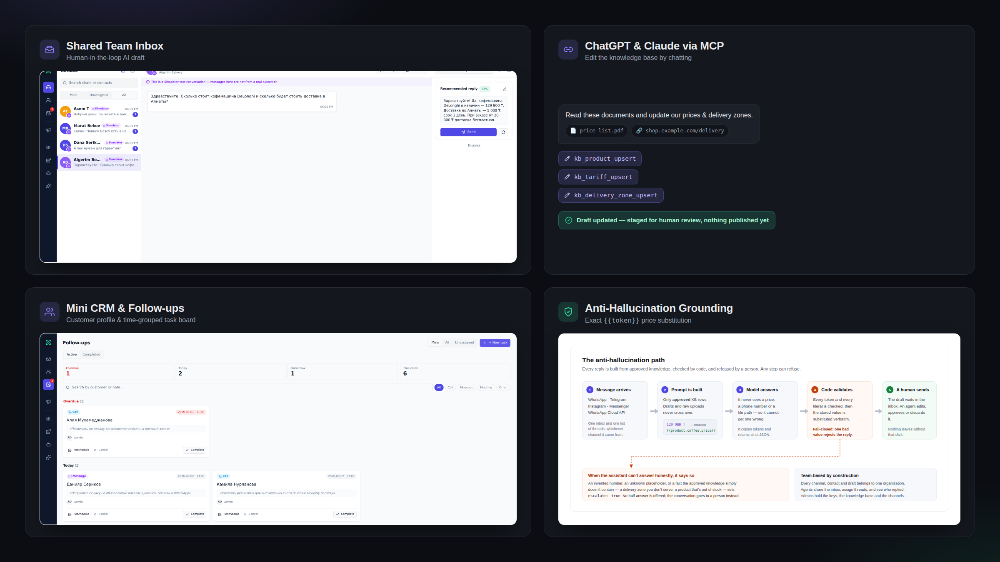
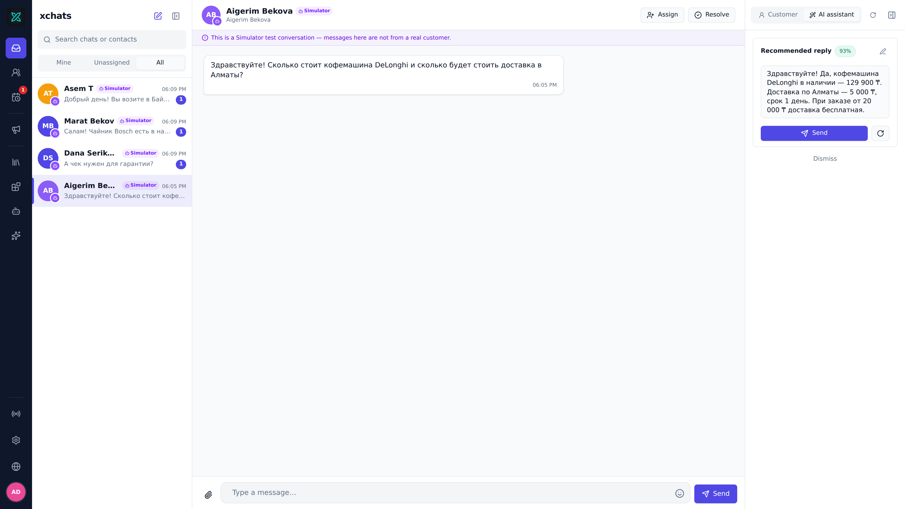

The AI assistant that never makes things up
WhatsApp, Telegram, Instagram and Messenger in one shared inbox. The assistant drafts every reply from your own knowledge base — a human always approves before it sends.
Single executable · No Docker or database setup required
Optional server quickstart: make up (Docker Compose)

Four platforms — one inbox
Connect all your customer messaging channels into one unified workspace. All free, all set up in minutes.
Linked device via QR code (no per-conversation Meta fees) or the official WhatsApp Cloud API.
Connect with your BotFather token. Supports webhook or polling — no public URL required.
Connect your Instagram Business or Creator account. DMs arrive right in the team inbox.
Link a Facebook Page — customer messages flow directly into the shared inbox.
WhatsApp Web connectivity is unofficial: Meta can ban the number at their discretion. Don't connect a number you can't afford to lose — start with a test one.
One product, seven real screens
Every panel below is a real screenshot from a live, running instance — not a mockup.

Every channel in one inbox, with a grounded AI draft waiting beside each thread for a human to approve.
Work together, with roles
Admins and members share one inbox. A conversation can be assigned to yourself or a teammate — nothing falls through the cracks.
Roles and conversation assignment, straight from the real product: Channels and Inbox.
Not one made-up number
The model is forbidden from writing numbers. It emits a placeholder — code substitutes the exact value from the knowledge base.
How much is the DeLonghi coffee machine, and when can you deliver to Astana?
The DeLonghi coffee machine costs 129,900 ₸. Delivery to Astana — 2 days.
The model never writes a number — code fills it in. An unknown placeholder means an error and a handoff to a human, never a guess.
Fill in the knowledge base right from the chat
Connect xchats as an MCP connector in ChatGPT or Claude, and configure the knowledge base just by talking to the assistant.
Understand these documents and store the tariffs, products, and delivery information.
xchats never fetches files or websites itself — ChatGPT or Claude reads them and stores the facts through 13 MCP tools.
No Docker. No servers. Just download and run.
xchats ships as a standalone native desktop application for Windows, macOS, and Linux. The embedded SQLite database, Go backend, and Vue web interface are all packaged into a single executable.
xchats.exe
Portable executable. Unzip and run. No installer, no Docker, no registry changes — data stored cleanly in AppData.
Downloadxchats.app
Universal bundle, native on Apple Silicon (M1/M2/M3/M4) and Intel Macs. Drag to /Applications.
Downloadxchats
Single self-contained ELF binary. Runs natively on Ubuntu 24.04+, Debian 13+, and Fedora 39+.
Download
Looking for server deployment? You can also run xchats on a remote VPS or home lab via docker compose up or pre-built container images.
Built to stay simple, fast and yours
No hosted dependencies, no subscription walls, no proprietary lock-in — built from day one for operators who run their own tools.
Written in Go with an embedded database (modernc.org/sqlite). No Postgres, Redis, or broker required — back it up by copying one file.
Your conversations, message history, contacts and knowledge base live exclusively on your machine or server. Zero external telemetry.
Swap between OpenAI, Claude, Gemini, OpenRouter, or a local self-hosted Ollama model directly from Settings.
How it works
Engineering and answer quality
Ready to try it?
Download the standalone executable for your OS, or launch the Docker container today.